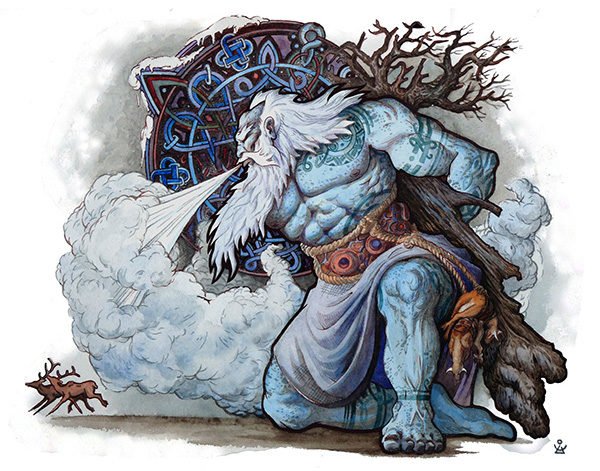
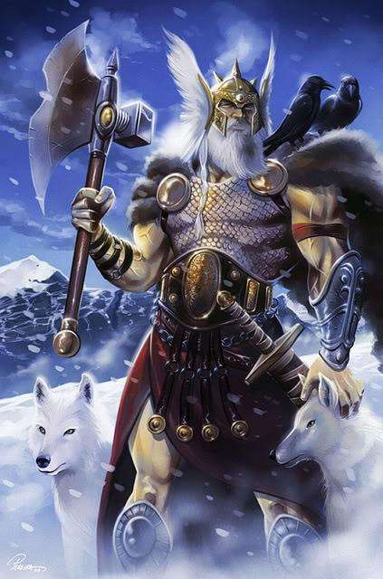
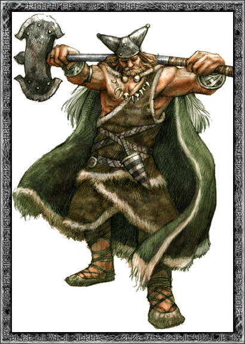
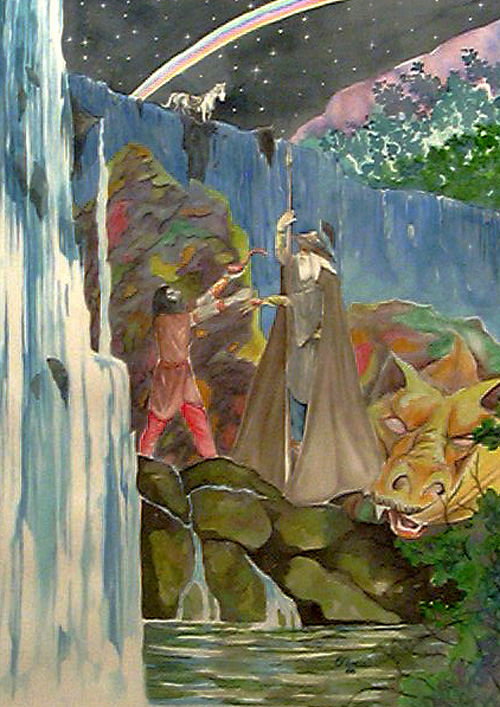
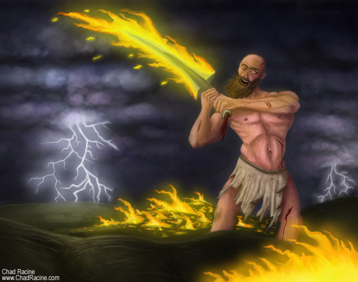
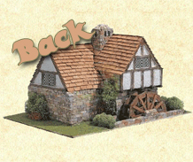

Великани
ИМИР

Имир е първото живо същество на земята. Според скандинавската митология, при възникването
на Вселената огънят на Муспелхейм се срещтнал с мразовете на Нифелхейм при Гинунгагап
(хаос, празнота, вакуум) и на това място ледът се разтопил, а от водата се зародил живот
в лицето на Имир. От него са произлезли великаните (тролите).
Боговете от расата Аезир (азите) убили Имир и направили от черепа му небесния свод,
от тялото му - земята, от кръвта - морето, от костите - планините, а от косите - горите.
БУРИ

Бури е прародител на боговете. Появил се от леден блок, близан от митичната крава Аудумла.
Бури е баща на Бор и дядо на азите, боговете от расата Аезир. И до сега не е уточнено дали Бури е великан или бог.
БОР

Бор е древен скандинавски бог, син на Бури. Той се оженил за ледената
великанка Бестла - дъщеря на ледения великан Болтор. От тази връзка се родили първите трима богове от
расата Аезир - азите Один, Вили и Ве.
МИМИР

Мимир е сляп великан. Най-могъщият от всички великани.
Той бил пазител на извора на мъдростта, който извирал от корените на гигантския ясен
Игдрасил. Върховният бог Один дал на Мимир едното си око, за да може да пие от водите на извора.
СУРТ

Сурт е предводител на огнените великани от Муспелхейм.
Във времената на Рагнарок (Залезът на боговете), той убил Фрейр с огнения си меч, но при това загинал и той.
